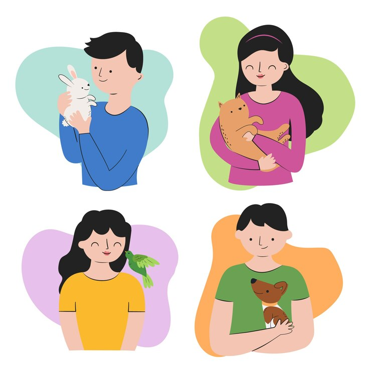

Hewan Peliharaan yang Cocok untuk Tinggal Bersama
1. Anjing
Anjing adalah salah satu hewan peliharaan yang paling populer di dunia.
Mereka dikenal karena loyalitas, kasih sayang, dan kemampuan mereka untuk beradaptasi dengan baik di lingkungan rumah.
2. Kucing
Kucing adalah pilihan hewan peliharaan yang cocok bagi mereka yang memiliki jadwal sibuk atau tinggal di lingkungan yang lebih terbatas seperti apartemen.
Kucing lebih mandiri dibandingkan dengan anjing dan bisa merasa nyaman tinggal di dalam ruangan.
3. Kelinci
Kelinci adalah hewan peliharaan yang lucu, ramah, dan cocok bagi mereka yang ingin hewan peliharaan yang tenang namun aktif.
Kelinci memerlukan kandang yang cukup luas dan aman untuk tidur, tetapi juga butuh waktu bermain di luar kandang agar bisa berolahraga dan bersosialisasi.
4. Burung
Burung adalah hewan peliharaan yang menyenangkan dan sering kali mudah dirawat.
Mereka umumnya tidak memerlukan banyak ruang, sehingga sangat cocok untuk rumah kecil atau apartemen.